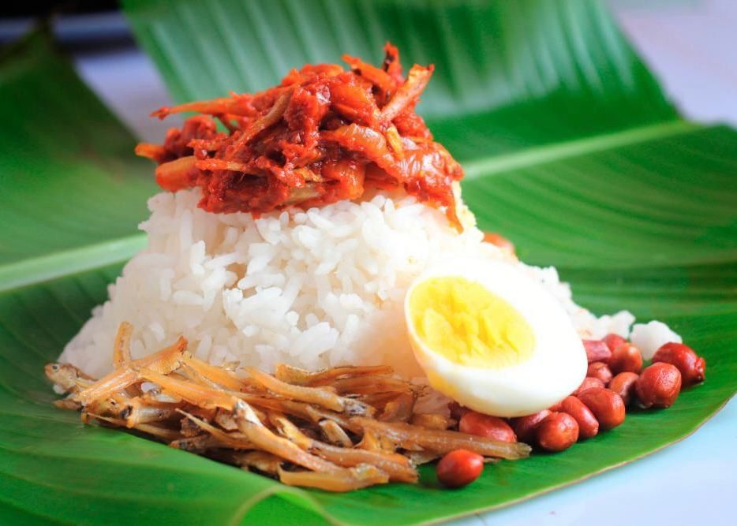
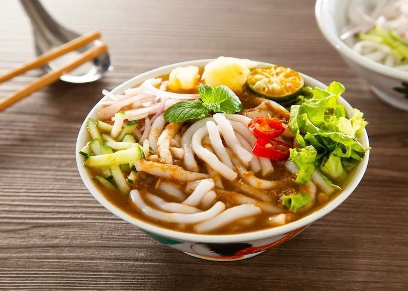
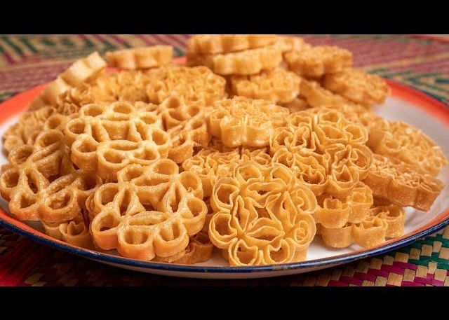
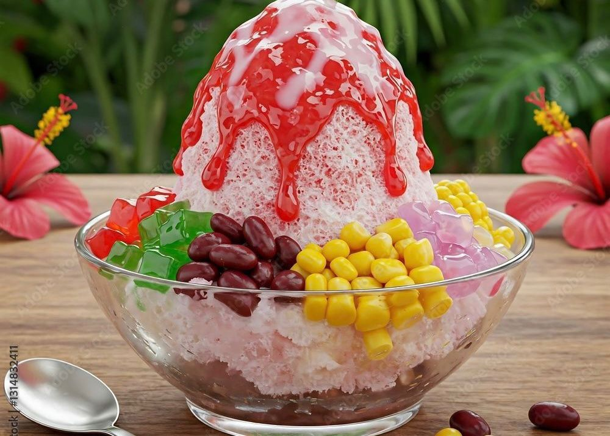

Nasi lemak is one of Malaysia’s most iconic and beloved traditional dishes, often considered the country’s national dish. The name literally means “rich rice” referring to the creamy, fragrant rice that is cooked in coconut milk and infused with pandan leaves for an aromatic flavor. Served with sambal, fried anchovies, peanuts, egg and cucumber

A popular and flavorful noodle dish in Malaysia. known for its rich, spicy, and aromatic broth. It is considered a comfort food and a symbol of the region’s multicultural food heritage.

Traditional Malaysian snack that is especially popular during festive seasons such as Hari Raya Aidilfitri, Chinese New Year, and Deepavali. The name “ros” (rose) comes from its beautiful flower-like shape

Famous Malaysian dessert that is colorful, refreshing, and packed with different textures and flavors. It is especially popular on hot days because of its cooling and sweet taste. Shaved ice topped with syrup, red beans, sweet corn, jelly and ice cream.